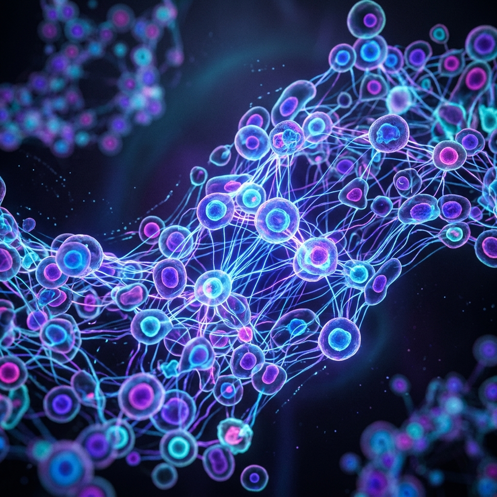
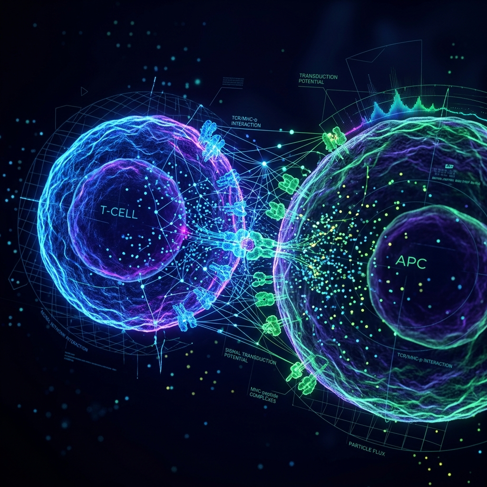

PhD Researcher in Machine Learning & Biophysics
I am a PhD researcher at the Indian Institute of Science (IISc), Bangalore, with over 3 years of hands-on experience building deep learning and computer vision pipelines for large-scale scientific datasets.
My research lies at the convergence of statistical mechanics, biological physics, and machine learning. I specialize in developing model-driven and data-driven computational methods—utilizing frameworks like TensorFlow, Keras, and JAX—to investigate complex dynamical systems, cell membrane fluctuations, and smart agent collectives.
I am highly driven to translate cutting-edge AI/ML research into robust, real-world engineering and diagnostic tools for clinical decision support, materials physics, and industrial fluid dynamics.
Interact with this live simulation of cellular active matter collectives. The particles represent active cells displaying self-propelled motion. Colored links (bonds) form dynamically as cells cluster. Adjust variables below to observe phase transitions, or click on the canvas to place/remove obstacles:
Focus: Machine Learning, Deep Learning, Computational Physics, Statistical Mechanics, Biological Physics.
Download the full document to review complete academic coursework, teaching history, and skills list.
Featured in the Times of India. Investigates cytoskeletal actin flows and lymphocyte microcluster dynamics.
Applies time series, machine learning analysis, and signal processing to high-dimensional fluid dynamical simulation data.
Visualizations of computational analysis, active cell simulations, and synapse modeling workflows.

Periodic boundary conditions applied to active matter dynamics to study alignment, phase transitions, and collective movement patterns.

Modeling T-cell and antigen-presenting cell contact junctions (lymphocyte synapse) using custom-developed neural network potentials and spatial constraints.
Large-scale GPU-accelerated computing cluster workflow setup to train and run CMA-ES parameters sweep simulations for biological systems.
When I am not writing custom training loops or diving into biophysics theory, I enjoy stepping away from the screen. Here are a few things I love to do in my free time:
Exploring the Western Ghats and various trekking trails around Karnataka.
Fascinated by hard science fiction novels and speculative technology futures.
Capturing landscapes, nature close-ups, and campus scenery at IISc.